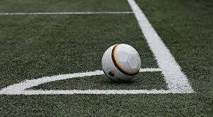
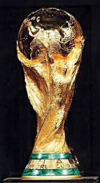

Sports Webpage
Facts about Soccer.

- Soccer, known as football outside of North America, is the worlds most popular sport.
- The game as we know it began in England in the 19th century.
- The FIFA World Cup is the most prestigious soccer tournament in the world, first held in 1930.
- Brazil holds the record for the most World Cup wins, with five titles.
- The highest-scoring soccer game ever was 149-0 in a Madagascar championship match in 2002.
The World Cup

- The World Cup is an international soccer tournament. It is one of the most popular international sporting competitions, with an estimated 1.5 billion fans tuning in to watch the 2022 final.
- The World Cup is a soccer tournament that takes place every four years and is organized by the International Federation of Association Football (FIFA). The headquartered of FIFA is in Zurich, Switzerland.
- The World Cup is held every four years, with the exception of 1942 and 1946, when the tournament was not held due to World War II.
- The World Cup trophy is made of 18-carat gold and is called the “FIFA World Cup Trophy.” The trophy is made in the shape of two human figures holding up the earth.
- Argentina won the last world cup held in Qatar in 2022.
FIFA Website